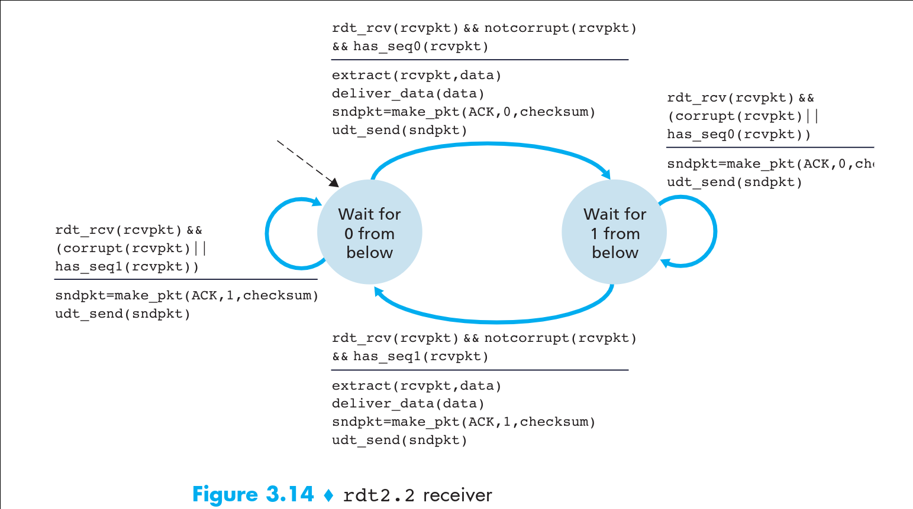
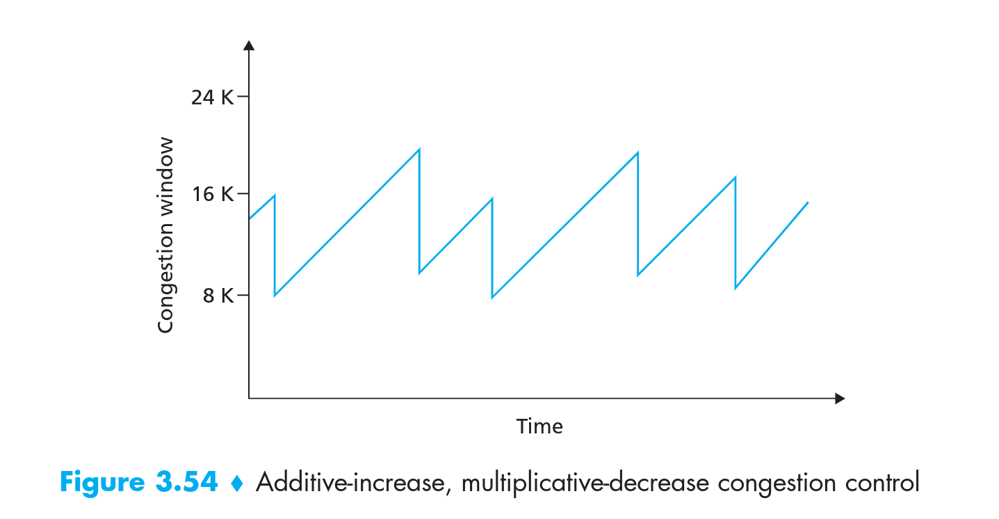

Most of content come from Computer-network-A-Top-Down-Approach.
3.4 Principles of Reliable Data Transfer
it may be corrupt bits , lose packets, packets out of order during the data transfer from client to servers . So . For avoid the data lose or other situation happened When we receive the data at the Application layer,we need to build a reliable data transfer protocol.
In fact , the layer that below the reliable data transfer protocol is unreliable . For example , TCP protocol is reliable data transfer protocol that is implemented top of unreliable (IP) end-to-end network layer.
we will discuss “build a reliable data transfer protocol above unreliable layer to reliable data transfer” following section below.
3.4.1 Building a Reliable Data Transfer Protocol
We now step through a series of protocols , each one becoming more complex until arriving at a flawless reliable data transfer protocol.
Reliable Data Transfer over a Perfectly Reliable Channel: rdt1.0
We first consider a simple case, in which the underlying channel is completely reliable. We call that protocol rdt1.0. The finite-state-machine (FSM) definitions for the sender and receiver are shown in Figure below.
rdt1.0 data transferred actions:
- sending side
- The sending side simply accepts data from upper layer (application layer) via rdt_send(data) event.
- Creates packets containing the data via the make_pkt(data) event.
- Send the packets to the underlying channel (network layer) via the udt_send(packet) event.
- receiving side
- rdt receives packets from underlying channel (network layer) via the rdt_rcv(packet) event.
- Remove the data from the packet via extract(packet,data) event.
- Passes the data up to the upper layer(application layer) via the deliver_data(data).
In summary of rdt1.0
In this simple protocol , these is no difference between a unit of data or packet. Also all packet flow is send from sender to receiver over a reliable prefer channel, So receiver don’t need send feedback to sender (tell the sender ‘I have received the packet’) since nothing can go wrong! Note that we have assume the receiver can receive data as fast as the sender happens to send data, Thus , there is no need for the receiver to ask the sender to slow down.
Reliable Data Transfer Over a Channel With Bit Errors: rdt2.0
A more realistic model of the underlying channel is one in which bit in the packet may be corrupted , such bit errors typically occur in physical components of network as a packet is transmitted packets , propagated , or buffered.
we will continue assume for the moment that all transmitted packets are received in the order in which they we sent.
Question:
- The bit of packet may be corrupted , when the packet is transmitted ,propagated,or buffered .
For example: yourself might dictate a long message over the phone and send to your friends. In typical scenario, the message receiver might say “OK”
after he has been heard , understood and recorded. But ! If the message receiver hears a garbled sentence . How to solve this problem?
Solution:
The message receiver will ask the sender to repeat the garbled sentence.
The rdt2.0 uses both positive acknowledgments (OK) and negative acknowledgments (“Please repeat that”). These control messages allow the receiver let sender know what have been received correctly , and what have been received error and thus requires repeating.
In the computer network setting , reliable data transfer protocols base on such retransmission are known as ARQ (Automatic Repeat reQuest) protocols.
Fundamentally, three additional protocols capabilities are required in ARQ protocol to handle the presence of bit errors.
- Error detection : A mechanism is needed to allow the receiver to detect when bit error have occurred . We can use internet checksum field to achieve this function as UDP did.
- Receiver feedback : The receiver needs to provide explicit feedback to the sender to let the sender know the receiver’s view of the world. Positive acknowledgment (ACK) and Negative acknowledgment (NAK)
- Retransmission : The sender need to repeat send the corrupted packet to receiver.
rdt2.0 data transferred actions
- sending side
- First of all the protocol state is “Wait from call from above” . The sender will pass data via rdt_send(data) event from upper layer to transfer layer, when the sender wanna to tranfer data.
- The sender will create packet(sndpkt) containing the data to be sent along with the checksum filed via sndpkt=make_pkt(data,checksum) event.
- Then send the packet(sndpkt）via udt_send(sndpkt) operation to receiver side.
- In the end change the protocol state to “Wait for ACK or NAK” for waiting response message from receiver (In this state ,the sender cannot get more data from upper layer)
- The sender will receive the response message and check it when the response message arrived. If the response is ACK (rdt_rcv(rcvpkt)&&isACK(rcvpkt)) , the sender will change the state back, otherwise the sender will resend the sndpkt to receiver via udt_send(sndpkt) event .
- receiving side
The receiving side still only has a state (wait call from below).
- The receiver will receive the packet and check it from below layer via (rdt_rcv(rcvpkt)&&corrupt(rcvpkt)) and (rdt_rcv(rcvpkt)&7notcorrupt(rcvpkt)) event.
- The receiver will make a packet along with NAK and send it back to sender side. If the packet suffer bit errors.
- Otherwise the receiver gets the corrupt packet, it will extract the packet and deliver the data to upper layer via extract(rcvpkt,data) and deliver_data(data) event. In the end . The receiver will make a packet along with ACK and send it back to sender via make_pkt(ACK) and udt_send(sndpkt)
fatal flaw of rdt2.0
Unfortunately rdt2.0 has a fatal flaw. In particular , we haven’t account for the possibility that the ACK and NAK could be corrupted !
And more difficulty question is how to recover from errors in ACK and NAK packets..
Solution for fatal flaw of rdt2.0
Simply, we just need to retransmit the packet to the receiver when the sender got a corrupted ACK or NAK packets.
This approach , however introduce the duplicates packets into the sender-receiver-channel. The difficulty is receiver can not know whether the arrived packet containing content is retransmitted packet or new packet ?
A simple solution to this new problem is to add a new filed and have sender number its data packets by putting sequence number into this filed. The receiver then need only check this sequence number to know whether or not the receiver packet is retransmission .
In the sender side use 0 and 1 sequence numbers represent different state of packets (new packet and old packet) . The packet containing sequence number 0 and sequence number 1 corresponding to the old packet and new packet, when the sender send packet containing sequence number 0 recent. In contrast ,the packet containing sequence number 0 and sequence number 1 corresponding to the new packet and old packet,when the sender send packet containing sequence number 1 recent.
Reliable Data Transfer Over a Channel With Bit Errors: rdt2.1
rdt2.0 added a sequence number filed called rdt2.1.
rdt2.1 data transfer action:
Reliable Data Transfer Over a Channel With Bit Errors: rdt2.2
We can accomplish the same effect as a NAK via only send ACK .
Out free NAK reliable data transfer protocol for a channel with bit errors known as rdt2.2.
Suppose the sender sends a packet containing sequence number 0, the receiver receives this packet and sends ACK 0 response (containing sequence number 0) to the sender. Sender got this ACK 0 response message and send a new packet containing sequence number 1 to the receiver, at this moment, the receiver that receiver a corrupted new packet, then the receiver will send an ACK of last received correctly packet (ACK 0)to sender side. The sender that receiver the same ACK 0 response twice (that is, receiver duplicate ACK) know that the receiver did not receive the new packet.
rdt2.2 data transfer action:
- sender side

- receiver side

Reliable Data Transfer Over a Lossy Channel With Bit Errors: rdt3.0
suppose now that in additions to corrupting bit errors , the underlying channel can lose packet as well.
Questions:
- How to detect packet loss and what to do when packet loss occurs.
Solution:
- The use of checksumming sequence numbers ACK packet and retransmissions - the techniques already developed in rdt2.2 allow us to solution the latter concern.
- To handling the first concern we require introduce a new protocol mechanism. The protocol require the sender judiciously choose a time value. If an ACK is not received within this time , the packet is retransmitted .
rdt3.0 data transfer action:
Because the packet sequence number alternate between 0 and 1, protocol rdt3.0 sometimes known as alternating-bit-protocol
In the rdt3.0 , the sender will start a timer for packet via start_timer() event
rdt3.0 sender side.
Question:
- How long must the sender wait to be certain that something has been lost ?
3.4.2 Pipelined Reliable Data Transfer Protocols
Question:
- Although the rdt3.0 is a functionally correct protocol . But it’s unlikely that anyone would happy with its performance . In fact , rdt3.0 has a dismal sender utilization. (more detail of calculation we can read the textbook)
Solution:
To solution this performance problem is simple: Rather than operate in a stop-and-wait-protocol, the sender is allowed to send multiple packet without waiting for acknowledgment as illustrated figure below.

Since the many in-transit sender to receiver packets can be visualized as filling pipeline , the technique is known as pipelining
pipelining has the following consequence for reliable data transfer protocols:
- The range of sequence number must be increated . Since we require to send mutiple packet , each packet need a unquie sequence number.
- The sender and receiver side of protocol must has to buffer more than one packet.
- The range of sequence number and buffering requirements will depend on the manner in which data transfer protocol responds to lost, corrupt and overlay delayed packets. Two basic approaches toward pipelined errors recovery can be identified :GO-Back-N and Selective repeat.
3.4.3 Go-Back-N(GBN)
In the GBN protocol, the sender allowed to send mutiple packet without waiting for acknowledgment, but is constrained to have no more than some maximum allowable number N , the N often be referred as the window size, the Go-Back-N(GBN) protocol often be referred as sliding-window-protocol.
We maybe have questions that why we limit the window size N instead of unlimited
About this question we will discuss in the flow control and congestion control sections.
Define
- Base: The sequence number of the oldest unacknowledgment .
- nextseqnum : The smallest unused sequence number.
- [0 ~ base-1]: corresponds to have already been transmitted and acknowledged.
- [base ~ nextseqnum-1]: corresponds to have already been sent but not yet acknowledge.
- [nextseqnum ~ base+N-1]: can be used to send packet when the data arrived from upper layer.
[base+N ~ ]: can not be used until an unacknowledged packet has been acknowledged.
Note that the GBN protocol packet containing fixed-length-sequence-number-filed ,in TCP protocol ,the length of sequence-number-filed is 32 bits, the range of sequence number is [0 ~ $2^{32} -1$ ] different to rdt3.0 that ranger of sequence number is [0 ~ 1],and the length of sequence-number-filed is 1 bits.
GBN data transfer action:
- receiver side

The GBN’s sender must respond to three type of event.
- Invacation from above: When rdt_send() be invoked from the upper layer. The sender requires to check the window whether the window has full. If the window is not full , the data from above can make be packet and sent . The sender will update appropriately some variables. If the window is full, the sender will refuse data and indication the upper layer that the window has full. The upper layer will resend it again before a period of time.
- Receipt of an ACK: Noting function
base = getacknum(rcvpkt)+1because the receiver use cumulative acknowledgment(we will discuss in receiver side ), for example , we can know packet of sequence number low than n has received correctly in the receiver side. When the sender side got the packet of sequence number n. Then we can updatebase = n+1and (stop_timer()orstart_timer) according to corrusp - A timeout event: If timeout occurs , the sender will resends all packets that previously sent but have not yet been acknowledgment . Namely
udt_send(sndpkt[base])....udt_send(sndpkt[nextseqnum-1])
The GBN’s receiver must respond to event:
In the GBN protocol , the receiver will discard out-of-order packets , for example the receiver expected sequence number is n , but the receiver receive a packet containing sequence number n+1 or more larger than n , the receiver will discard this packet and resend the packet containing expected sequence number to sender via udt_send(sndpkt) event. So the receiver be called use cumulative acknowledgment.
Note that the GBN protocol sender must be maintain The upper and lower bound of its window and position of nextseqnum within this window. The receiver must be maintain the sequence number of next in-order-packet.(expectedseqnum)
How does GBN protocol work we can see this video: GBN
3.4.4 Selective Repeat (SR)
Question:
Although GBN protocol avoiding the utilization problem of rdt3.0 , The GBN itself also has a performance problem . When the window size and bandwidth-delay both large, many packets can be in pipeline. If have a packet lost in the transmission will cause a large number of packets to retransmission.
Solution:
As the name suggests, selective repeat protocol avoid unnecessary retransmission by having the sender retransmit those packets that it suspects were received in error(that were lost or corrupted ) at the receiver.
Difference to GBN protocol, SR protocol has window in the receiver side like the figure above.
The receiver will acknowledgment a correctly received packet whether or not it is in-order. Out-of-order packet will be buffering until any missing packet (that is lower than sequence number has buffered) are received. When the packet of sequence number (rcv_base) is received , the receiver will deliver a batch of packet that begin with sequence number (rcv_base) and end with smallest unreceived sequence number minus one to upper layer. Then number rcv_base increase
SR protocol data transfer action:
- sender side
- Data received from above: The sender will check the next sequence number (nextseqnum) whether or not larger than window size
If(nextseqnum>base+N).If the nextseqnum is within the window, the sender will make data into packet and send it to receiver. Otherwise the sender will either buffered or returned to upper layer for later transmission as in GBN. - Timeout: Different to GBN protocol , in the SR protocol , each packet has its own logical timer since only a single packet will be transmitted on timeout.
- ACK received: If an ACK packet within the window is received , the SR sender will marks that packet as having been received. Until the packet containing sequence number (send_base) is received . Then the sender will move the send_base forward to the unackknowledgment packet with smallest sequence number.
- receiver side
- Packet with sequence number in [rcv_base,rcv_base+N-1] is correctly received whatever whether or not in-order. Then the packet is buffered at the receiver . If the packet containing sequence number (rcv_base) is received. The receiver will deliver the packet that begins with rcv_base and end with the smallest unreceived sequence number minus one to the upper layer. Then move rcv_base forward to the smallest unreceived sequence number.
- Packet with sequence number in [rcv_base-N,rcv_base] is correctly received . Occur this situation cause is a ACK with sequence number in [rcv_base-N,rcv_base] maybe lost or corrupted or bandwidth-delay ,then timeout the sender retransmission the packet , In this case , an ACK must be generated and resend this ACK to sender, even though this is a packet that has previously acknowledgment.
- Otherwise : Ignore this packet.
Disadvantages of SR protocol
The two case could happen when the window size too-large and the range of sequence number too-small
The window size is 3 and the range of sequence number is 4 in the example
In this case , the old packet 0 is recognized as new packet 0, packet confuse
In this case , packet 3 is lost , the rcv_base = 3 , The packet 0 containing new data will be recognized as old packet 0 when the sender send the new packet 0. Because 0< [3,3+3-1]. Packet confuse.
How small window size must be ?
Answer is window size must be less than or equal to a half of sequence number space for SR protocol.
How does SR protocol work we can see this video : SR
3.5 Connection-Oriented Transport:TCP
3.5.1 The TCP connection
The TCP “connection” is not an end-to-end TDM or FDM circuit as in a circuit switch network. Nor it’s a virtual circuit , only as the connection state reside entirely in two end system.
The TCP connection provide full-duplex service, namely , Application layer data of two end system can sent to other side.
The TCP connection always point-of-point that is between a single sender and a single receiver.
The TCP connection established by three-way-handshake , the first two handshake by send the segment that can not carry payload, the third handshake by send the segment that can carry payload.
The TCP connection also always point-to-point , that is a singer sender and a single receiver.
The TCP connection has buffer in two end system. The data is passed through socket then the TCP directs this data to connection’s sender buffer then the TCP will grab chuck of data from send’s buffer and pass the data to network layer. As shown in figrue below.
Two terminology
- MSS(Maximum segment size): The maximum amount of application data can place in segment.
- MTU(Maximum transmission unit): The largest frame size (application data plus TCP/IP header line)
In Summary
The TCP connection consist of sender’s buffer and sender’s variables and socket connection to process in sender’s host and socket connection to process in receiver’s host and receiver’s variables and receiver’s buffer.
As mentioned early TCP connection only has two state reside in the sender host and receiver host , no buffer and variable allocated in network element between two end system host (router and switch and repeater)
3.5.2 TCP Segment Structure
- Source and destination port numbers:corresponding to sender socket and receiver socket.
- Checksum field: for detecting the corrupt whether occurred during the traveling as like UDP checksum field.
- The 32 bits sequence number field: The sequence number is the byte number of first byte of data in the TCP packet sent (also called TCP segment)
- The 32 bits acknowledgment numbers: The next packet that receiver expects to receive.
- The 16-bits receiver number: Used for flow control , indicate the window size N that we discuss in the GBN and SR protocol.
- The 4-bits header length field: indicates how long the header is, in 32 bit “words”. The minimum value is “5” which would be 160 bits, or 20 bytes. The maximum length is 15, which would be 480 bits, or 60 bytes
- The optional and variable-length optional field: Used when a sender andreceiver negotiate the maximum segment size (MSS) or as a window scaling fac-tor for use in high-speed networks. A time-stamping option is also defined.
- The flag field contain 6 bits:
- ACK bit : Used to indicate that value carried in the acknowledgment field is valid .
- RST,SYN,FIN bit: Used for connection setup and teardown .
- PSH bit: Used to indicate the receiver should pass the data to upper layer immediately.
- URG bit: I don’t know what this means
Sequence number and acknowledgment number
Cause These two fields are critical part of TCP connection , We discuss more detail about these.
All byte in TCP connection are numbered beginning at a randomly choose initial sequence number(ISN) , The SYN packets consume one sequence number , so actual data begin at ISN+1
For example The TCP connection establish as shown in figure below
- Step 1: The client want to establish connection with server , it will send a packet contain SYN bit and randomly choose initial sequence number (Client_isn) to sever.(no payload)
- Step 2: The server has received this packet then response a packet contain initial sequence number (server_isn) and SYN bit and acknowledgment number (Client_isn+1) to Client.(no payload)
- Step 3: The connection established success when the Client has received the response of packet, Client then change the SYN to 0 and send the packet contain sequence number client_isn+1 and acknowledgment number server_isn+1 and actual data (payload) to server.
3.5.3 Round-Trip Time Estimation and Timeout
TCP like rdt3.0 use timeout/retransmission mechanism to recover from lost segment.
Although conceptually simple , many subtle issue arise when we implement timeout/retransmission mechanism in actual protocol such as TCP protocol.
Questions:
- How larger time is timeout .
- How estimating the round-trip-time between the sender and receiver
- Should a timer be associated with each and every unacknowledgment packet?
Estimating The Round-Trip-Time
- SampleRTT: Represent the amount of time between when the packet sent from the sender (that is pass the packet to the network layer) and when the acknowledgment segment has received.
The TCP does not estimate stampleRTT for every single packet(segment), Instead of TCP implementation take only one sampleRTT measurement at a time - EstimatedRTT: Because different sampleRTT value will be fluctuate due to congestion in the routers and to varying load on the end systems. The sampleRTT is atypical , In order to estimate a typical RTT ,it is therefore natural to take some sort of avenger of sampleRTT . The TCP maintains an avenger called EstimatedRTT.
EstimatedRTT = (1- a) * EstimatedRTT + a * SampleRTT
The value ofatypically choose 0.125.EstimatedRTT = 0.875 * EstimatedRTT + 0.125 * sampleRTT - DevRTT: DevRTT as an estimate of how much sampleRTT typical deviates from EstimatedRTT.
DevRTT = (1-b) * DevRTT + b * |sampleRTT - EstimatedRTT|
The value ofbtypical choose 0.25.DevRTT = 0.75 * DevRTT + 0.25 * |sampleRTT - EstimatedRTT| - Timeout Interval: Clearly The timeout interval should be greater than or equal to EstiamtedRTT or unnecessary retransmission will be sent. But the timeout should not be too larger than EstimatedRTT . Otherwise when the segment has lost , The TCP would not retransmission quickly , leading to large transfer delay.
TimeoutInterval = EstimatedRTT + 4 * DevRTT
An initial Timeoutinterval value of 1 second is recommended
3.5.4 Reliable Data Transfer
TCP is best categorize as a hybrid of GBN and SR protocol.
In the receiver(server) side:
In TCP protocol ,server use cumulative ACK as like GBN protocol does, server also buffer out-of-order packet as like SR protocol.
In the sender(client) side:
Since TCP use cumulative ACK, If the client has received ACK with acknowledgment number 120, just mean the server has received all byte lower than 120
For example: The server sends the ACK with acknowledgment number is 120, namely, server expect next sequence number is 120, the client got the ACK packet, then sent two packets with sequence number 120,130 to the server , unfortunately, the packet with sequence number 120 is lost, the server received the out-of-order packet with sequence number 130, then, the server buffers the out-of-order packet as like SR protocol does and sent ACK with acknowledgment number 120 back to the client , here is different to SR protocol, as like GBN protocol does.
TCP Retransmission and Doubling the timeout interval
Different from GBN and SR protocol, TCP only retransmits the not-yet-acknowledgment segment with the smallest sequence number when the timeout occurs, then restart timer with doubling timeout interval.
For example : Suppose the timeoutinterval associated with oldest not-yet-acknowledgment segment is 0.75 sec when the timer expires, TCP will retransmit this segment and set new expiration time to 1.5 sec , If the timer expires again 1.5 sec later , TCP will retransmit this segment and set new expiration time to 3.0 sec, however whenever the timer is started after either of two other events (that is ACK received and data received from application above), the timeoutinterval is derived from the most recent value of EstimatedRTT and DevRTT
Qusetion: Why we need to doubling timeout interval.
Because, in times of congestion , the segment maybe dropped or suffer long queues delay, If we resent the packet persistently , the congestion may get worse . Instead TCP should acts more politely with earn sender retransmit after long and long interval.
TCP Fast Retransmit
One of problem with timeout-triggered retransmissions is that the timeout period relatively long , when a segment is lost, this long timeout period will force sender to delay this segment retransmit thereby increasing the end-to-end delay. So we need to fast retransmits mechanism.
Before discuss TCP Fast Retransmit , we should know how does ACK generate .
TCP ACK Generation Recommendation
The duplicate ACK is indicated that this segment has been lost, when the sender has received this same segment three time . TCP will perform fast retransmit , send this segment to receiver again.
For example : The sender send a large number of segment back to back , if one segment is lost , there will likely be many back-to-back duplicate ACK, if the sender received same duplicate more than three time , The sender will be perform fast retransmit, As shown in figure below.
Code snippet of Fast retransmit
3.5.5 Flow Control
Flow control is speed-matching-service that be used to matching the sender sending speed and the receiver’s application reading speed.
If the application reading receiver’s buffer at slow speed , the sender can very easily overflow the connection’s receive buffer by sending too much data and too quickly.
TCP provide the flow control by having the sender maintain a variable called receive window, Because the TCP is full-duplex , the sender at each side of the connection maintain a distinct receive window.
Suppose the host A send segments to host B over TCP connection, host B allocate a buffer to this connection.
Let me define some variables for host B and host A.
For Host B (server)
- RcvBuffer : the size of receive window(buffer) size of host B.
- LastByteRead : the number of the last byte in the data stream read from receive buffer by application in B.
- LastByteRcv : the number of the last byte in the data stream has been received from network and has been placed in receive buffer.
- rwnd : the amount of space room in the buffer
rwnd = Rcvbuffer - [LastByteRead - LastByteRcv]
For Host A (Client) - LastByteSent : the number of last byte in the data stream has sent at the sender side .
- LastByteAcked : the number of last byte in the data stream has ACKed at the sender side .
Host B and host A maintain those variables that we mention above.
How to control the flow through these information.
The Host B tells Host A that how much space room it has in the connection buffer by place the value of rwnd in receive window field of ACK segment.
The host A just need to keep the LastByteSent - LastByteAcked less than rwnd (,LastByteSent - LastByteAcked <= rwnd`), the sender can assure that it is not overflowing the receive buffer at the Host B.
If the receive buffer has filled at the Host B, the Host A will stop sending data to Host B, instead, Host A will send one bit to Host B for keeping the connection until the Host B has space room again.
3.5.6 TCP-Connection-Manage
Establish TCP connection
Finish TCP connection
TCP states at the sender side
TCP states at the receiver side
The SYN flood attack
we can see detail in the textbook
3.6 Principles of Congestion control
3.6.1 The Causes and the costs of Congestion
Scenario 1: Two sender , a Router with infinite buffer
Assume the host A and host B have same sending original data rate $\lambda {in}$ ( application sending original data into socket by $\lambda {in}$ ignore the cost of that be encapsulated by TCP/IP header line) and the router throughput capability is $R$The throughput equal to R/2 is consequence of two sender Host A and Host B sharing outgoing link of the router.
We can see the sender sending rate more approaches $R/2$ , delay become more larger and larger. The delay become to infinite when the $\lambda_{in}$ larger than $R/2$
Here , we found one cost of congestion — large queue delay are experienced as the packet-arrived rate near the link throughput capability.
Scenario 2: Two Senders and a Router with Finite Buffers
The $\lambda{in}$ is denoted application layer sending the original data into socket by $\lambda{in}$ bytes/sec.
The $\lambda’{in}$ is denoted transfer layer sending segment into network by $\lambda’{in}$ bytes/sec (containing original data and retransmited data).
The Router throughput capacity is $R$ bytes/sec.
a. The Host A and Host B is able to somehow (magically) determine whether or not the buffer is free in the router . sender only sends data only has free buffer . In this case $\lambda{in}$ equal to $\lambda’{in}$, didn’t occur packet loss. This case is shown as figure.a below
b. The Host A and Host B may set a larger enough timeout can determine the pakect has been lost , then sender only retransmit packet that is determinded has been lost. This case is shown as figure.b below, we can see the $0.5R$ units of data transmitted . $0.333R$ bytes is original data and $0.166R$ bytes is retransmitted data
we can here see another cost of congestion is the sender must perform retransmit packet in order to compensate for dropped packet due to buffer overflow.
c. The Host A and Host B may set a small timeout interval (or in face of large delay), the sender retransmit prematurely and retransmit packet that have been delay in queue but not yet lost. The original data and retransmited data both may reach the receiver , the receiver will discard the copy of original data . This case is shown as figure.c below
we can here see the third cost of congestion — unneeded retransmissions by sender in face of large delay may cause router to use it link bandwish to forward unneeded copies of packet- Scenario 3 Four sender and Router with Finite Buffer and Multihop Paths
In this case the A-C connection share route R2 with B-D connection. Consider The host A send data to host C and host B send data to host D both at the same time . The data of host A arrive router R2 with R bytes/sec i , The data of Host B arrive router R2 with $\lambda$ , the Host A and Host B need to compare for the free buffer of router R2, if the $\lambda << R$ , nothing going happen , data will safely arrive in destination host, but if the $\lambda >> R$ (the $\lambda$ extremely large) , the router will be filled immediately by data of host B , the data of host A will lost because of buffer overflow and that work done by router A will be wasted.
We can see the fourth cost of dropping the packet due to congestion — when a packet is drop along a path, the transmission capacity that was used at each of upstream link to forward that packet to this point at which it is dropped end up having been wasted.
3.6.2 Approach to Congestion Control
Two kind of Congestion control way
- End-to-End Congestion Control
- Network-assisted Congestion Control: The Network (router) provide the feedback to sender indicate the congestion state .Two feedback way for congestion control.
- Direct feedback: The router direct inform the sender via send choke packet.
- The router mark/updata in a packet flowing from sender to receiver to indicate the congestion. Upon recipt of a marked packet , the receiver notifies the sender congestion indication .
- Direct feedback: The router direct inform the sender via send choke packet.

3.6.3 Network Assisted ATM ABR Congestion Control
This section we can learn by textboot
3.7 TCP Congestion Control (End-To-End Congestion Control)
This approach (The TCP Congestion Control Mechanism )taken by TCP is to have each sender limit the rate at which its sends traffic into its connection as a function of perceive network congestion. How to perceive the congestion ? we will discuss below.
This approach requires senders keep track of an additional variable , the congestion window that is denoted cwnd [different to receive window(rwnd) at flow control]
The congestion window imposes an constraint on the rate at which a TCP sender can send into the network.The unacknowledged data = LastByteSent - LastBystAck <= min{ cwnd , rwnd}
- In order to focus to Congestion Control , we assume the receive window is large enough that we can ignore it.
- We also assume the sender always has data to send.
- We define the “loss event” at a TCP sender as the ocurrence of either a timeout or recipt of three duplicate ACK from the receiver.
How congestion is detected ?.
In the TCP congestion mechanism, The ACK is used to perceive the network congestion situation, The congestion window is used to constrain sent data rate. If ACK is received quickly, the TCP will increase the sender congestion window size quickly. If ACK is received slowly, the TCP will increase the sender congestion window size slowly. If “loss event” occurred (indicate Netwok congestion ), the TCP will take some measures to reduce the congestion window size
Give a overview of TCP congestion control, Now ,let me see more detail about TCP congestion-control algorithm
The TCP congestion-control algorithm has three major components:
- Slow start
- Congestion avoidance
- Fast recovery
Slow Start
When a TCP connection begin . the value of cwnd typically initialized to a small value of 1 MSS (maximum segment size) resulting in an initial sending rate of roundly MSS/RTT. For example , The MSS equal to 500 bytes , the RTT equal to 200 msec , the resulting inital sending rate is only roundly 20 kbps.
If each ACK that is sent within RTT can be received within the same RTT. The TCP is doubling the value of cwnd. Namely increase the value of cwnd by a single MSS every ACK within the same RTT
For example, the initial value of cwnd is 1 MSS, the sender is sending 1 segment into the network within an RTT . when ACK of this segment is received at the sender within the same RTT , the TCP is doubling the value of cwnd that is to say cwnd become to 2 MSS, the sender can send two-segment within RTT right now. If these two ACK of segments is received at the sender within the same RTT , the cwnd is doubling to 4 MSS.
Thus the TCP send rate start slow , but grow exponentially during the slow phase.
When should this exponentail growth end?
- The first way: When timeout event ocurred , The TCP will set the value of cwnd back to 1 MSS begin slow start process anew, and set a new state variable ssthresh (that is “Slow Start Threashold”) to $cwnd/2$
- The second way: When the $cwnd \geq ssthresh$ ocurred , the slow start end and turn into congestion aviodance mode.
- The third way: When the thripe duplicate ACK is detected , the slow start end and turn into fast recovery mode, perform fast retransmit.
Congestion Avoidance
On entry to the Congestion-Avoidance state , the value of cwnd is approximately half its value when congestion was last encountered , that is to say , the congestion could be just around the corner.
Thus , rather than doubling the value of cwnd every RTT. TCP adopt more conservative approach and increase the value of cwnd by just a single MSS every RTT
The several events should do in the Congestion Avoidance state.
- The TCP sender increases the value of cwnd by $MSS\cdot(\frac{MSS}{cwnd})$ bytes (here cwnd is constant) when ever a new Acknowledgment arrives. For example the cwnd equal to 500 bytes and the MSS equal to 50 bytes, the sender is sending 10 segment within an RTT . Thus the TCP sender is increasing the value of cwnd by $5$ bytes when ever a new Acknowledgment arrives.
- When the timeout occurred , The TCP sender is set the value of cwnd back to $1$ MSS and the value of ssthresh is updated to half the value of cwnd , end up turn into slow start mode .
- When the thripe duplicate Acknowledgment is received . The sender is seting $ssthresh =\frac{cwnd}{2}$ and $cwnd = ssthresh + 3 \ast MSS$,then turn into fast recovery mode.
Fast Recovery
The several events should do in the Fast Recovery state
- The value of cwnd increased by $1$ MSS for every duplicate ACK received for the missing segment that caused TCP enter the fast-recovery state.
When the ACK arrived for the missing segment , the sender set $cwnd = ssthresh$ and turn into congestion avoidance state .
If the timeout occurred , the sender set the value of ssthresh to half the value of cwnd and set the value of cwnd to $1$ MSS, then turn into slow start state.
The relationship between the three kinds of state
Congestion window size changes along with time Ignoring theinitial slow-start period when a connection begins and assuming that losses are indi-cated by triple duplicate ACKs rather than timeouts.

计算机网络 Computer Network A Top-Down Approach Computer Network A Top-Down Approach
本博客所有文章除特别声明外，均采用 CC BY-SA 3.0协议 。转载请注明出处！